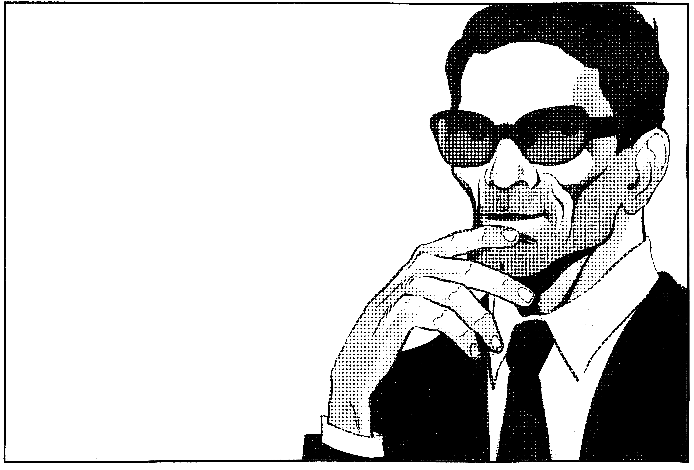
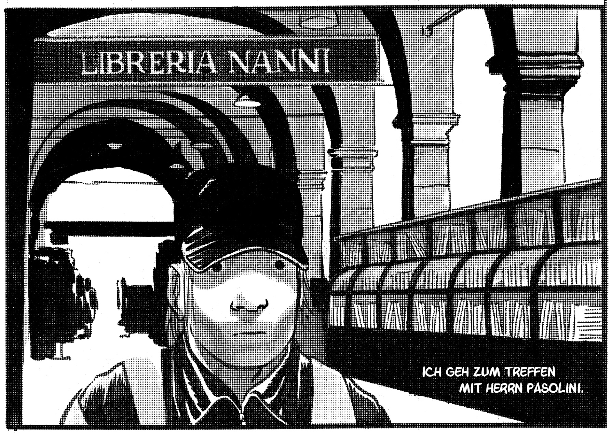
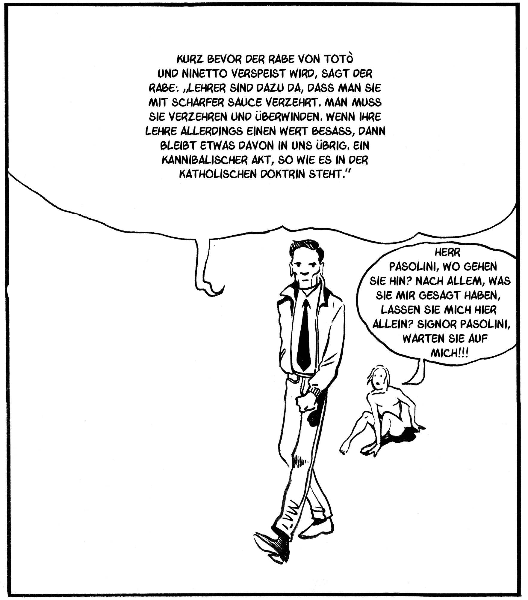
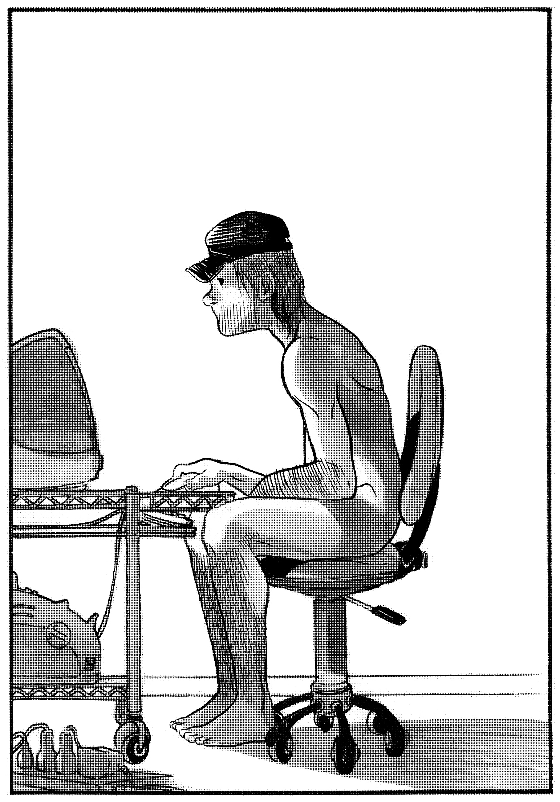
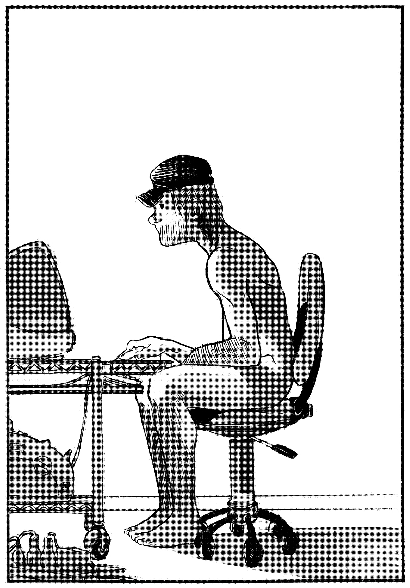

INTERVIEW MIT PASOLINI
Website zur Graphic Novel von Davide Toffolo,
erschienen in der Galerie der abseitigen Künste

Ein Leser kann ein Gedicht auch eine Million Mal lesen, ohne es dabei zu konsumieren, im Gegenteil, vielleicht kommt es ihm nach der millionsten Lektüre noch seltsamer, neuer und skandalöser vor, als beim ersten Mal.


 
